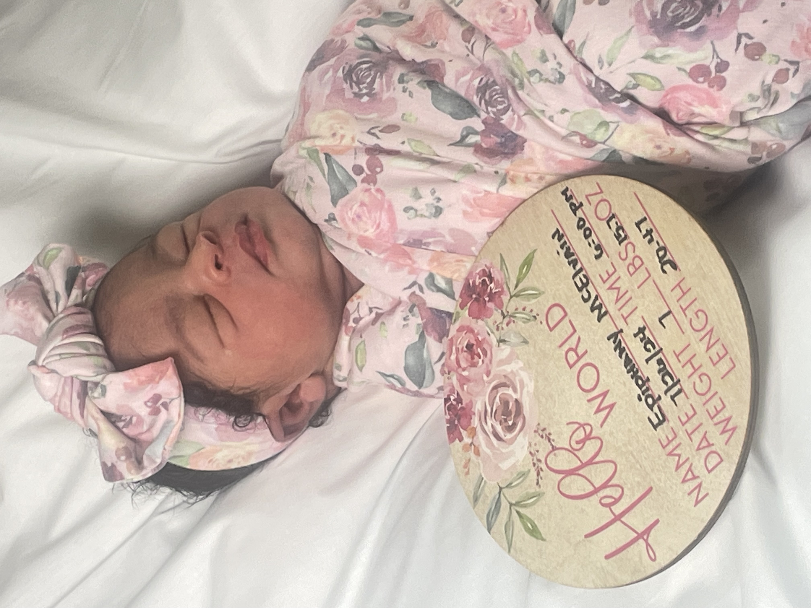
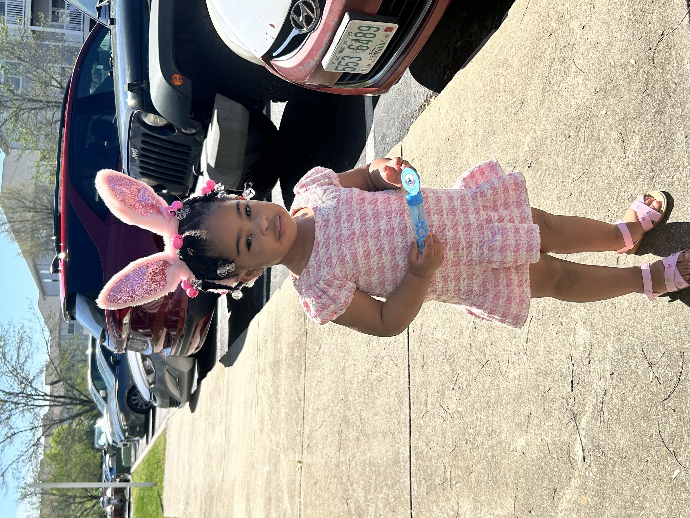

Who is Epiphany Miracle?
Epiphany Miracle was born July 26th, 2024 at 6pm at the Erlanger Baroness Campus. She was born with a Nuchal umbilical cord, meaning it was wrapped around her neck twice in her case. When she was born her nostrils were heart shaped and I thought it was the cutest thing ever. Being a first time mom we had a lot of first experiences together. She has been the sweetest baby who loves all people and animals that she meets. Now that she is almost 2 everyday we get to see her amazing personality shine everyday.
Epiphany at Birth and 20 months old


How I am Growing
Epiphany is exceeding the CDC milestones for a one year old by showing strong skills in learning, movement, and communication. She is doing more than what is typical for her age including showing advanced curiosity, problem solving, and understanding. Her physical development stands out through her strength, coordination, and growing independence in everyday activities. Socially and emotionally, she is highly engaged, responsive, and aware, showing development that appears ahead of schedule. She is not only meeting expected milestones but surpassing them across multiple areas of growth. Overall, Epiphanys progress reflects exceptional development and a strong foundation for continued learning.